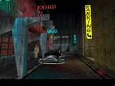
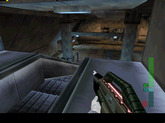
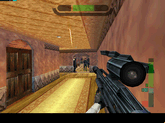
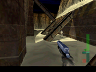
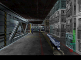
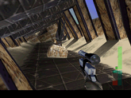
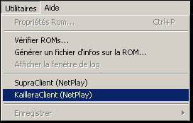
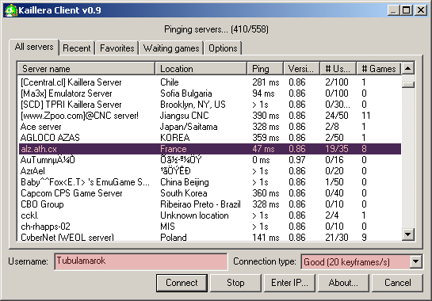
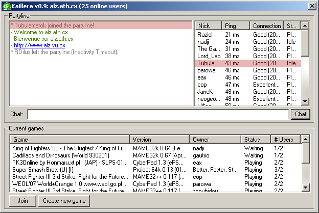
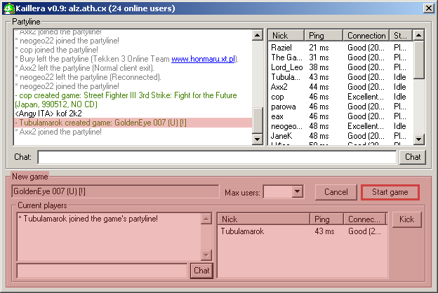

|
| Emulation |
L’Emulation c’est quoi ? Cela peut être des Tas de Choses, mais ici, ce qui nous intéresse, c’est jour à Goldeneye ou Perfect Dark sur un Emulateur. C’est quoi ça veut dire ? Ca veut dire jouer au Jeu Console, MAIS sur Ordinateur, comme n’importe quel autre Jeu PC. On a besoin de quoi pour faire ça ? On a un peu besoin de la même chose que quand on joue sur Console : Il faut le Jeu, la Console, et une Manette. Sur votre Ordinateur, il vous faudra un Programme (l’Emulateur) ainsi que la ROM du Jeu (le Jeu converti en Fichier d’Ordinateur, comme un MP3 ou une Vidéo par exemple). |
Ensuite,
comme il est très Soporifique de jouer avec un Clavier à
ce genre de Jeu, il vous faudra trouver un moyen de brancher une Manette
sur votre Ordinateur. Comme Goldeneye
et Perfect Dark se jouent avec un Joystick, il faudra trouver une Manette
avec un Joystick dessus. Si vous voulez vraiment vous faire plaisir,
vous pouvez dépenser 10
Dollars (9.99 pour être précis) et commander un Adaptateur
USB qui vous permettra de brancher directement votre Manette N64 sur
votre PC. Et là, c’est vraiment le Rêve.
Cliquez sur l'Image à Droite pour voir la Photo en plus Grand
! |
| Pourquoi jouer sur un Emulateur ? |
Bien que ce soit plus agréable de jouer sur un Canapé, jouer sur Emulateur vous fera découvrir les Jeux comme vous ne les aviez jamais vu. Pourquoi ? Parce qu’avec un Emulateur (si vous avez une Bonne Machine) vous redécouvrirez les Jeux tels que les Programmeurs les ont fait. Vous jouerez au Jeu sans passer par la Case « Clipping, Brume et Ralentissement(s) » que nous faisez subir la N64. Voici quelques Exemples ci-dessous de Captures d’Ecrans faites avec l’Emulateur Project 64. Bien que ces Jeux soient Vieux, admirez à quel Point la Résolution est Fine ! On peut voir loin ! Et c’est Fluide ! Bon, certaines choses ne sont pas encore émulées (les Emulateurs évoluent au fil du temps) comme le Ciel ou des Détails, mais c'est déjà Sublime... |
 |
 |
||
 |
|||
 |
 |
 |
 |
 |
 |
 |
 |
Bref,
avec un Emulateur, c’est comme si vous jouiez à Goldeneye
et Perfect Dark sur une Télé Haute Définition,
sans Brume et sans Flou ! Que du Bonheur ! En
plus de ça, les Emulateurs ont quelques Petites Fonctions en
Plus, vous pourrez tout configurer (Résolution, Vitesse), calibrer
votre Manette, et il y a même un Action Replay incorporé
dedans, avec en Mémoire des Codes tout prêts pour s’amuser.
Touche Finale, il y a même une Fonction pour jouer en Ligne contre
d’autres Joueurs du Monde Entier ! |
Est-ce
que c’est Légal ? |
 |
C’est
la Partie que chaque Site sur l’Emulation se doit de préciser
: Si vous possédez la Cartouche Originale, vous avez le Droit
de posséder la Rom du Jeu sur votre Ordinateur et d'y jouer tranquillement
sans être inquiété. Par contre, comme je n’ai
aucun moyen de savoir si vous l’avez ou pas, je ne fournirais
pas la ROM. Néanmoins, vu l’Age du Jeu, il est très
peu probable que ayez des Ennuis à avoir la ROM sans avoir la
Cartouche chez vous… |
Quel
Emulateur Choisir ? |
Le Meilleur Emulateur est Project 64. Allez sur le Site Officiel et téléchargez la Dernière Version. Cet Emulateur n’est pas très dur à configurer, si vous avez des soucis, contactez-moi en bas de cette Page. La Chose Importante à configurer est ici : Allez dans Options, puis Reglages, et décochez la Case « Cacher les Réglages Avancés ». Ainsi, vous pourrez entrer des Codes Action Replay ! Voici ci-dessous la Liste des Emulateurs que je vous conseille. |
| Project
64 |
Le
Meilleur Emulateur pour jouer aux Jeux N64 ! |
|
| Mupen |
Le Meilleur
Emulateur pour jouer à Goldeneye en Ligne ! |
Comment
jouer en Ligne avec Mupen ? |
Pour pouvoir jouer contre quelqu’un, il faut avoir la même ROM que lui. Pour cela, lancez Mupen, cliquez une fois sur la ROM de Goldeneye dans la Liste des ROMs que vous avez, puis allez dans « Utilitaires », puis « Propriétés ROM ». Regardez à la Ligne « Somme de » : Il faut absolument qu’il y ait écrit « 70C525880240C1E838B8B1BE35666C3B ». Si c’est OK, on passe à la Suite… Pour jouer en Ligne, c’est assez simple. Coupez tous vos Programmes qui bouffent de la Bande Passante (eMule, Soulseek, Bittorrent etc) et lancez Mupen. Une fois dedans, allez dans Utilitaires, puis KailleraClient (NetPlay) comme indiqué sur l’Image ci-dessous. |

|
Vous
vous retrouverez dans une Fenetre comme ci-dessous. Vous êtes
dans « All Servers ». Le Programme va chercher tout seul
tous les Serveurs qui utilisent le Protocole KailleraClient (NetPlay).
Triez les Serveurs par Location et cherchez un Serveur proche de chez
vous. Pourquoi près de chez vous ? A cause du Ping. Le Ping,
c’est le Temps que met une Information à aller de chez
vous au Serveur. Plus ce Temps est Court, mieux c’est. Vous remarquerez que le Serveur « alz.ath.cx » a un Ping de 43ms, ce qui signifie qu’entre le moment où vous appuyez sur votre Bouton et le moment où le Jeu réagira, il y aura 43 Millisecondes de retard. Ce n’est rien du tout. Par contre, vous remarquerez que dans la Liste des Serveurs, il y en a un en Corée du Sud où votre Ping sera de 360 !!! Il est donc inutile d’aller jouer sur un Serveur Sud-Coréen pour jouer à un Jeu où chaque Milliseconde est importante. Choisissez-vous un Pseudo, mettez-vous en Good (20keyframes/s) et double-cliquez sur le Serveur Français « alz.ath.cx » ! |
|
 |
|
Regardez
l’Image ci-dessous : Vous êtes sur le Serveur « alz.ath.cx
» ! Sur votre Droite, la Liste des Gens qui y sont présents,
avec leur Ping. Si vous jouez contre quelqu’un qui a un Ping plus
grand que vous, vous aurez un Avantage sur lui, et vice-versa. Pour
pouvoir jouer contre quelqu’un, il faut également être
en « Good (20keyframes/s) » comme nous avons vu ci-dessus.
Sur votre Gauche, la Fenetre de Tchat. C’est ici que vous pouvez
discuter… En Bas, vous verrez la Liste des Jeux. Exemple : Sur ce Salon, Gautxo a créé une Partie de Cadillacs and Dinosaurs (World 930201) et il y joue sur l’Emulateur Mame 32k. C’est un Jeu qui se joue à 2, et il attend que quelqu’un joue contre lui. Pour pouvoir jouer contre lui, vous devrez être arrivé sur ce Serveur avec le même Emulateur. Pour jouez contre Gautxo, il vous suffit de double-cliquer sur sa Ligne… Pour créer une Partie, cliquez sur « Create New Game » ! |
|
 |

Et
voilà ! Vous avez créé votre Partie ! Vous pouvez
choisir le Nombre de Joueurs Maximum (« Max Users »), ou
annulez votre Partie (« Cancel ») Il ne vous reste plus
qu’à attendre que quelqu’un vienne rejoindre votre
Partie. Vous pouvez un peu discuter avant histoire de voir en quel Mode
on va jouer. Si le Joueur vous soule, vous pouvez le Kicker… Une
fois que tout est OK, cliquez sur « Start Game » ! |
|  |
Et voilà ! Rendez-vous sur
le Serveur !